Il est — à Montréal.
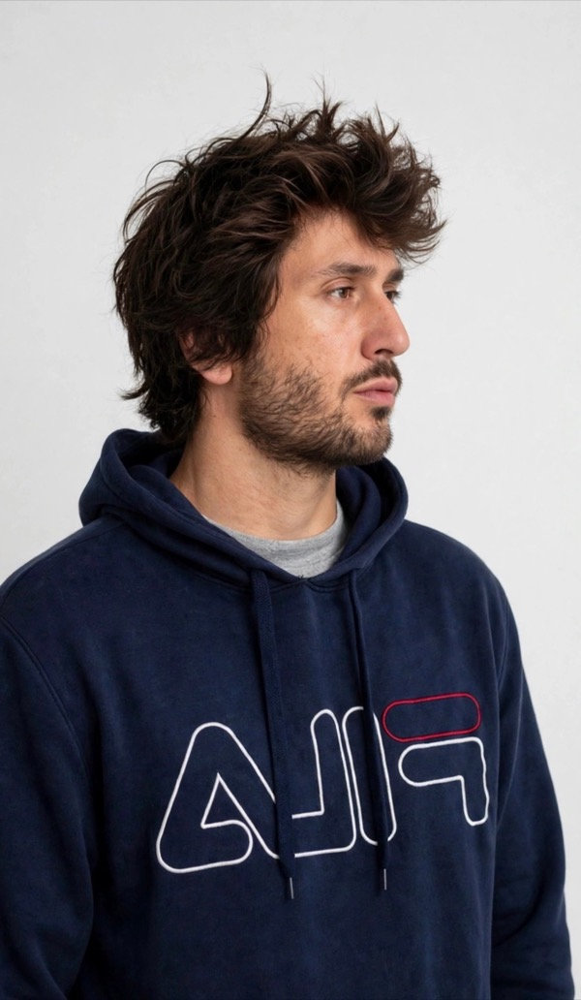
Glisse, survole et clique pour explorer.
J’utilise l’IA dans mon travail — mon bon sens fait le reste.
DESIGN PORTFOLIO / VOL. 01
STEREO
SUMMER FLOW
真夏の流れ
SELECTED WORKS · UI/UX
THE REVERSE SIDE / 裏面
MADE WITH FIGMA, CLAUDE CODE & GITHUB
© 2027 MANU. ALL RIGHTS RESERVED.
J’utilise l’IA dans mon travail — mon bon sens fait le reste.
Livret / Face A
Hello,
je suis Manu, designer importé de France sans étiquette de retour. J’étudie en psychologie et j’apprends aussi en faisant : illustration, piano et vibe coding. Avant de concevoir des interfaces, j’ai passé dix ans dans la relation client. Ça laisse un réflexe : écouter avant de proposer.
Je prête attention aux détails qui fatiguent, excluent ou bloquent. En design, j’ai tendance à retirer plus qu’à ajouter. Mon envie, c’est que ça fonctionne pour tout le monde, pas juste pour la norme. D’ailleurs, quand on dit que c’est normal, je réponds : « Mais normal pour qui ? »
Ce site est un exemple concret de mon travail avec l’IA. Réalisé avec Figma, Claude et GitHub, il reflète ma direction créative, mes choix de design et mon attention aux détails.
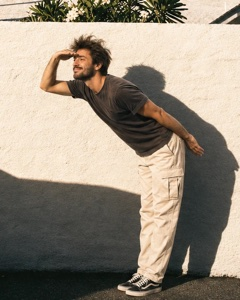
Hello, je suis Manu, designer importé de France sans label de retour. J’étudie en psychologie et je suis autodidacte dans plusieurs domaines : l’illustration, le piano, le vibe coding.
Je suis sensible à ce que certains ne voient pas toujours — ce qui fatigue, ce qui exclut, ce qui bloque. En design, j’ai tendance à retirer plus qu’à ajouter.
Mon envie, c’est que ça fonctionne pour tout le monde, pas juste pour la norme. D’ailleurs, quand on me dit que c’est normal, je réponds : « normal pour qui ? »
Ce site est l’exemple concret de mon travail avec l’IA. Il est entièrement réalisé sous Figma, Claude et GitHub, mais il est pensé et peaufiné avec ma tête.
Ce portfolio · L’écran de démarrage
Un portfolio s’ouvre souvent sur un écran de chargement. Le mien raconte déjà qui je suis.
Treize lignes d’émojis, de 1981 à aujourd’hui, qui défilent en une seconde. On n’a pas le temps de tout lire : c’est voulu. Voici la clé.
Des images que tout le monde lit, dans toutes les langues.
Elles laissent deviner, on reconnaît, on se pose des questions. Et elles ne font pas un CV : des phrases, personne ne les lirait en une seconde.
Cinq signes pour transformer des images en phrases.
Ce que chaque ligne raconte.
Une seconde, pas un mot : il faut choisir l’essentiel.
Choisir, soigner le rythme et l’ordre de lecture : c’est ce que je fais avec une interface.
Contenu à venir.
Groupe Voyage Québec
Un MVP de réservation pour congrès, qui devait convaincre avant d’exister.
Sans produit existant ni recherche terrain. Trois choix ont rendu l’expérience évidente.
Quarante sessions, c’est trop. Dix à la fois, ça se lit.
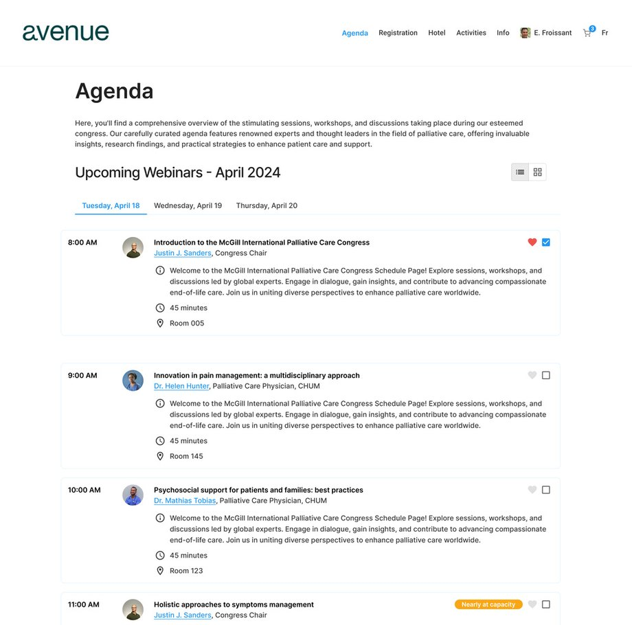
Un onglet par jour, et tout se parcourt au clavier.
Dire qui paie, et ce qui reste.
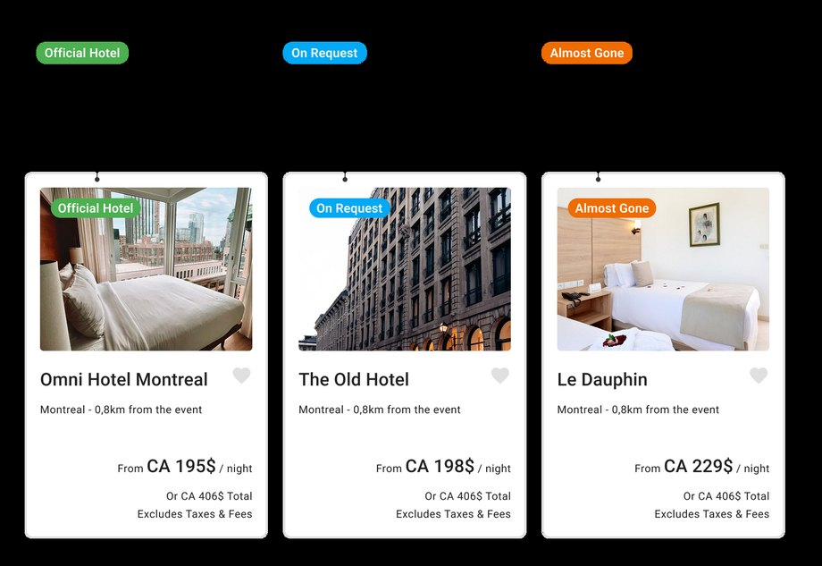
Official Hotel nomme la relation commerciale. Almost Gone et On Request montrent la disponibilité. On sert le client sans tromper le participant.
Ne pas réinventer ce que les gens savent déjà faire.
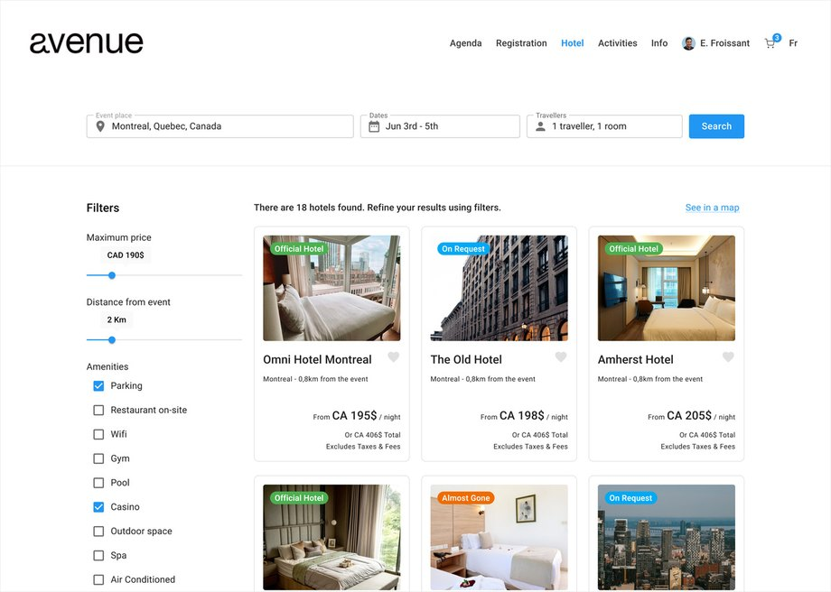
Une mise en page à la Booking ou Expedia : les gens gardent leurs réflexes et se concentrent sur leur choix.
Le MVP a vendu avant d’exister.
Groupe Voyage Québec reprend le travail sur la plateforme.
Tester avec de vrais participants.
Et mesurer les pages clés : le produit vend, il reste à prouver qu’il performe.
Roche Diabetes Care
Pour le Mois du diabète, chaque selfie retourné publié déclenchait un don de 5 $ à la recherche.
Mais le client imposait aussi une publicité produit. Il fallait qu’elle se voie, sans casser l’élan de ceux qui participaient.
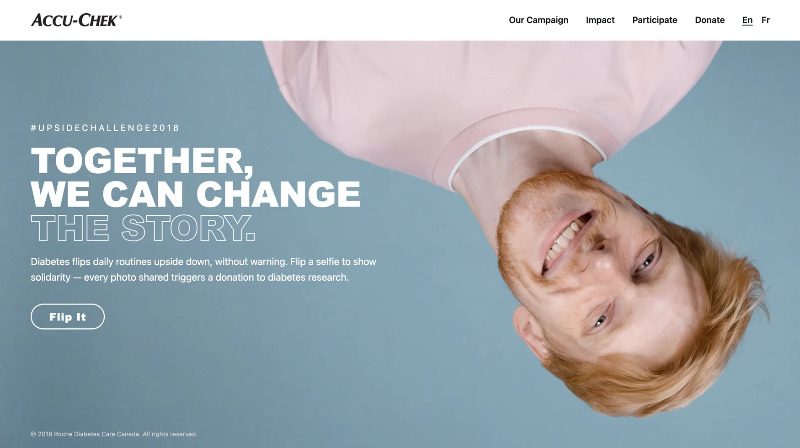
Plus on s’investit dans une image, plus on la partage.
Texte, émojis, autocollants : chacun s’approprie son selfie retourné.
Une pub vue, pas subie.
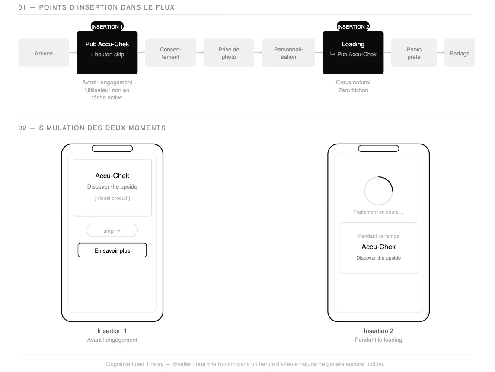
Deux moments seulement : à l’entrée, avec un bouton pour passer, et pendant le chargement de la photo, quand on attend déjà.
Une campagne reprise par Strategy Magazine et Newswire Canada.
Moins de champs, moins d’abandons.
Réduire le formulaire marketing imposé : chaque champ est un risque d’abandon.
Refonte de Healthwatch, le logiciel des pharmaciens depuis 13 ans.
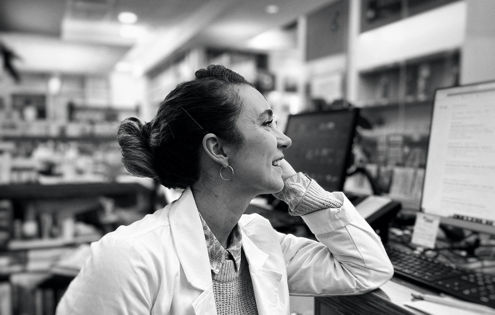
Dans un contexte de résistance au changement, j’ai audité Healthwatch et analysé les observations de terrain avec l’équipe produit.
À partir des user stories, j’ai conçu les interfaces de gestion des ordonnances, des stocks, des équipes et des dossiers patients.
Shoppers Drug Mart · Pharmaprix
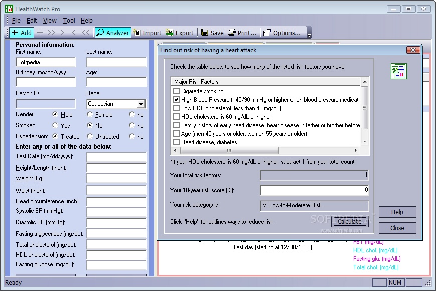
Healthwatch servait les pharmaciens depuis 13 ans : incohérent, peu sûr, mais familier.
Avant de le refaire, j’ai cherché où il les laissait se tromper.
Un logiciel de 13 ans, où chaque écran cache un piège.
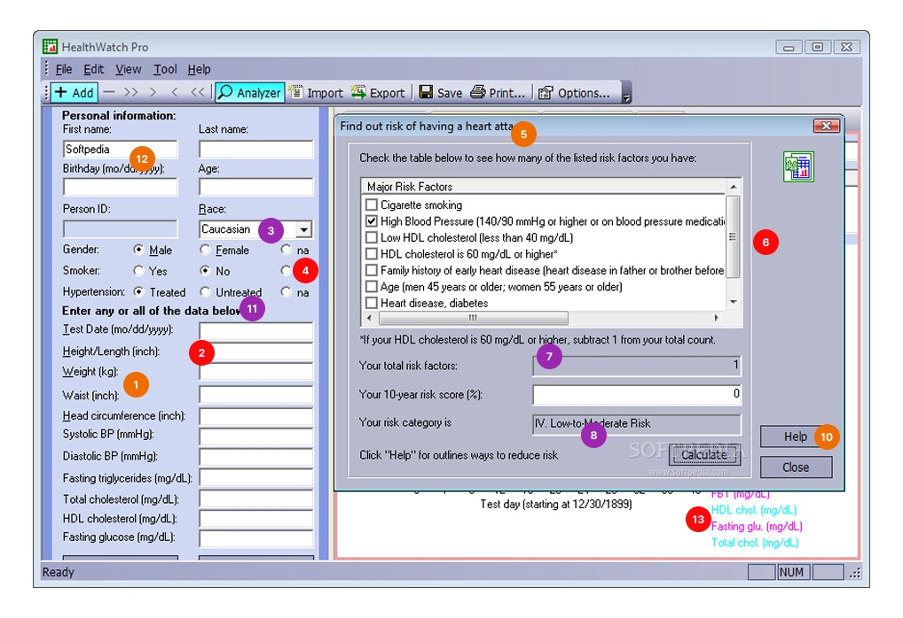
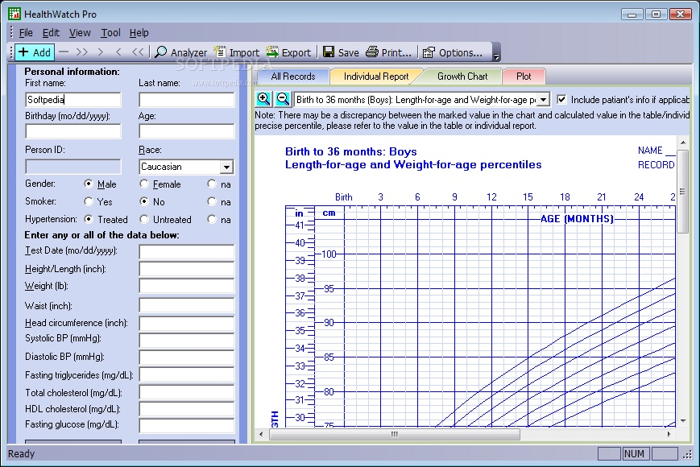
La cause d’erreur la plus forte ne se voyait dans aucun écran : la lumière.
D’où un mode sombre par défaut, pour reposer les yeux. Les pharmaciens l’ont adoré ; il a été mis de côté.
Ralentir seulement là où une erreur peut blesser.
Amoxicilline — dose (mg)
Orange : erreur probable, on alerte sans bloquer. Rouge : chiffre incohérent, on fait retaper. Retaper oblige à relire ; un bouton « Confirmer », on le clique sans lire.
Un champ en cachait trois.
Je l’ai défendu jusqu’à la direction de l’expérience numérique de Loblaw.
Plus lisible. Plus ergonomique. Plus inclusif.
C’est ce qu’ont dit les pharmaciens aux tests, face à Healthwatch. Le projet a été arrêté faute de budget.
Les pharmaciens, dès le premier jour.
Pas au bout de deux ans. Et pas de code sans maquettes finalisées.
Écrans sur demande (confidentialité).
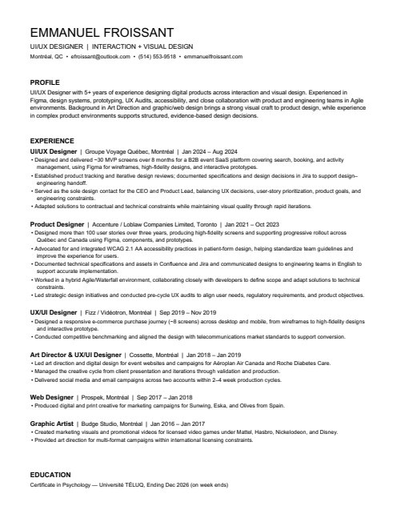
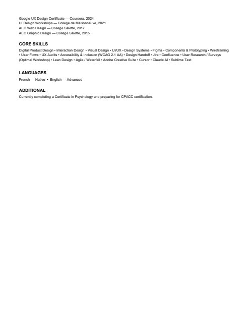
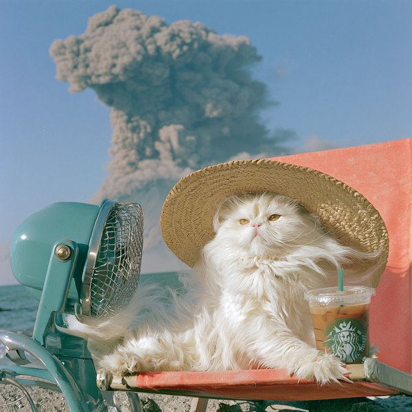
Mercredi 9 Septembre 2026
Emmanuel Froissant
Designer UI/UX
Emmanuel Froissant
Designer UI/UX
DESIGNER UI/UX
Avant de concevoir, je m’intéresse à ce qui se passe dans la tête des gens — c’est plus intéressant que juste déplacer des pixels.